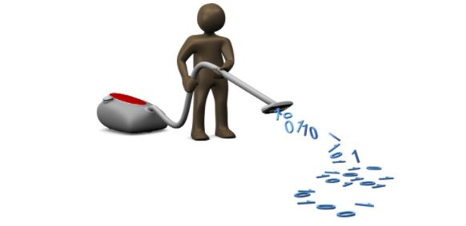
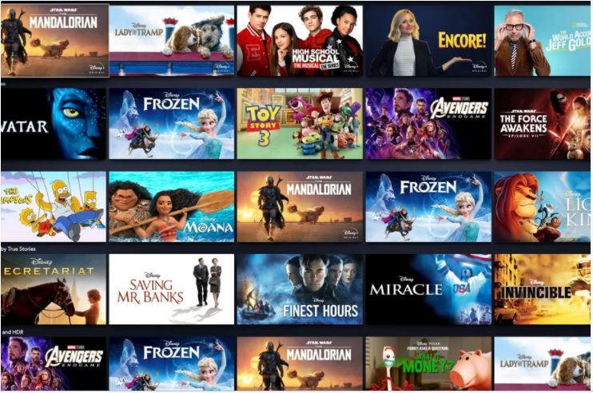
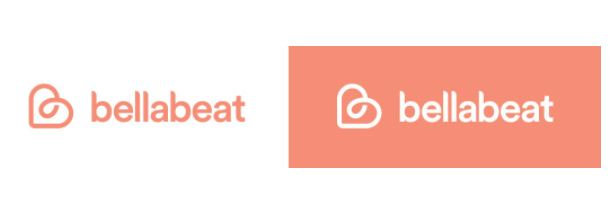

In this project,I design a Covid dashboard that is automatically refreshed daily.
All the steps in the process from data extraction to cleaning and visualization are automated.
The dashboard represents global statistics on Covid19
and provides insight into Covid19 deaths and infection count in different continents
and countries.

In this project,I used SQL functions to clean Housing Data.I cleaned and formatted dates,addresses,
null and duplicate observations.

In this project,I cleaned the movies data and checked correlation of gross earnings of a movie
with factors including budget,company,cast,votes etc.I made use of scatter,regression plots and correlation matrix for
numeric and non numeric parameters.
In this project,I automated data scrapping from amazon.The price of the item is tracked
daily and when it falls below $15 ,I am informed via email to avail price drop.

I did this project as a part of google data analytics certificate.I analyzed
user data of around 30 Fitbit users including their daily activity,sleep patterns, heart activity and use patterns of smart watch.
After data exploration,I gave data driven recommendations on marketing strategy of Bellabeat-a wellness company.